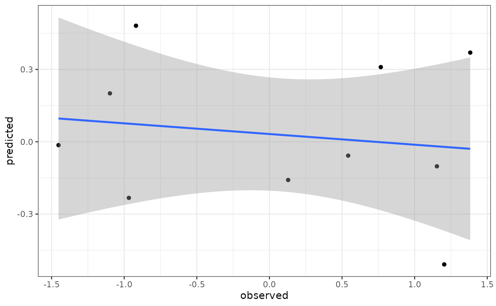

Run a single cross-validation with BGLR.
cross_validate_genomic_prediction.RdRun genomic prediction given a single response variable (usually a phenotype)
using the BGLR function. Unlike other snpR functions,
this returns the resulting model directly, so overwrite with caution. This
will leave a specified portion of the samples out when running the model,
then perform cross-validation.
Usage
cross_validate_genomic_prediction(
x,
response,
iterations = 10000,
burn_in = 1000,
thin = 100,
cross_percentage = 0.9,
model = "BayesB",
cross_samples = NULL,
plot = TRUE,
interpolate = "bernoulli"
)Arguments
- x
snpRdata object
- response
character. Name of the column containing the response variable of interest. Must match a column name in sample metadata.
- iterations
numeric. Number of iterations to run the MCMC chain for.
- burn_in
numeric. Number of burn in iterations to run prior to the MCMC chain.
- thin
numeric. Number of iterations to discard between each recorded data point.
- cross_percentage
numeric, default 0.9. The proportion of sample to use to create the model. Must be greater than 0 and less than 1.
- model
character, default "BayesB". Prediction model to use, see description for the ETA argument in
BGLR.- cross_samples
numeric, default NULL. Optional vector of sample indices to use for cross-validation. If provided, the cross_percentage argument will be ignored.
- plot
logical, default TRUE. If TRUE, will generate a ggplot of the cross-validation results.
- interpolate
character, default "bernoulli". Interpolation method for missing data. Options:
bernoulli: binomial draws for the minor allele
af: insertion of the average allele frequency
Value
A list containing:
model: The results from
run_genomic_predictionmodel.samples: Indices of the samples used to construct the model.
cross.samples: Indices of the samples used to cross-validate the model.
comparison: A data.frame containing the observed and predicted phenotypes/Breeding Values for the cross-validation samples.
rsq: The r^2 value for the observed and predicted phenotypes/Breeding Values for the cross-validation samples.
Details
This function is provided as a wrapper to plug snpRdata objects into the
BGLR function in order to easily run genomic prediction
on a simple model where a single, sample specific meta data variable is
provided as the response variable. To do so, this function formats the data
into a transposed "sn" format, as described in format_snps
using the bernoulli method to interpolate missing genotypes. Several
different prediction models are available, see the documentation the ETA
argument in BGLR for details. Defaults to the "BayesB"
model, which assumes a "spike-slab" prior for allele effects on phenotype
where most markers have a very small effect size and a few can have a much
larger effect.
Unlike most snpR functions, this function does not support facets, since each
run can be very slow. Instead, an individual facet and facet level of
interest should be selected with subset_snpR_data. See
examples.
The portion of samples left out for cross-validation is defined by the cross_percentage argument. Specifically, the proportion given will be used to create the model, the remaining portion will be left out. For example, if cross_percentage = 0.9, 90% of the samples will be used to run the model and the remaining 10% will be used for cross-validation. Alternatively, if cross_samples are provided, the specified samples (by column index) will be used used for cross validation instead. This may be useful for a systematic leave-one-out cross-validation.
See documentation for BGLR for more details and for a
full list of references.
Examples
# run and plot a basic prediction
## add some dummy phenotypic data.
dat <- stickSNPs
sample.meta(dat) <- cbind(weight = rnorm(ncol(stickSNPs)),
sample.meta(stickSNPs))
## run cross_validation
cross_validate_genomic_prediction(dat, response = "weight",
iterations = 1000, burn_in = 100,
thin = 10)
#> $model
#> $model$x
#> bi-allelic snpRdata with 100 SNPs and 90 samples.
#> ================================================================================
#> Average minor allele frequency: 0.2306865
#> Minimum minor allele frequency: 0.006410256
#> Percent missing data: 0.1392222
#> ================================================================================
#> Possible sample metadata facets:
#> weight pop fam .sample.id
#>
#> Possible SNP metadata facets:
#> chr position .snp.id
#>
#> ================================================================================
#> Currently tabulated facets:
#> .base
#>
#> Currently calculated statistics:
#> Facet: .base
#> maf
#>
#> Calculated statistics can be accessed via get.snpR.stats()
#> ================================================================================
#>
#> $model$models
#> $model$models$.base_.base
#> $model$models$.base_.base$model
#> $y
#> [1] 0.558514422 -0.308211421 -0.338935872 -0.117860143 -0.272153684
#> [6] -0.070857431 0.289774460 0.441428226 -1.686504742 -0.212236035
#> [11] 0.065486641 -0.578884625 1.142694878 -0.397001493 -0.154120740
#> [16] -1.193641182 -1.312814246 -2.063654451 0.786362576 2.648932029
#> [21] -0.429380087 -1.528958715 0.709714522 -0.639534770 -2.177576028
#> [26] 0.007886198 0.340424488 1.763789378 2.158756554 0.747028587
#> [31] -1.270513110 0.415406399 0.708753061 1.233390065 1.317633698
#> [36] 0.075105900 -0.503592910 -1.431270777 0.554185515 -0.102603036
#> [41] 0.239959572 -1.562518435 -0.604829354 1.877743872 -0.998432551
#> [46] -0.077886824 1.138707653 1.061999145 1.100189745 0.132992146
#> [51] -0.472702482 1.123838843 1.012001849 -0.906340179 0.941206122
#> [56] 0.237425345 0.003125940 -0.480053484 0.124301066 0.563380077
#> [61] 0.060898893 -0.340637876 1.893360464 1.360461327 2.564408338
#> [66] -0.845195739 -0.751723323 -0.830214260 0.376499328 -2.102152479
#> [71] 0.149679354 -2.446680029 0.071053360 -0.633178176 -0.902814949
#> [76] 0.040204392 0.112294787 -0.828603533 -0.010303319 0.322482749
#> [81] 1.241263075 1.460110180 -1.433321100 -0.823261151 1.455841403
#> [86] 0.612090945 -0.075574247 1.993110265 -1.153398386 0.675244698
#>
#> $a
#> NULL
#>
#> $b
#> NULL
#>
#> $whichNa
#> integer(0)
#>
#> $saveAt
#> [1] "GtozuUG6xa"
#>
#> $nIter
#> [1] 1100
#>
#> $burnIn
#> [1] 100
#>
#> $thin
#> [1] 10
#>
#> $weights
#> [1] 1 1 1 1 1 1 1 1 1 1 1 1 1 1 1 1 1 1 1 1 1 1 1 1 1 1 1 1 1 1 1 1 1 1 1 1 1 1
#> [39] 1 1 1 1 1 1 1 1 1 1 1 1 1 1 1 1 1 1 1 1 1 1 1 1 1 1 1 1 1 1 1 1 1 1 1 1 1 1
#> [77] 1 1 1 1 1 1 1 1 1 1 1 1 1 1
#>
#> $verbose
#> [1] FALSE
#>
#> $response_type
#> [1] "gaussian"
#>
#> $df0
#> [1] 5
#>
#> $S0
#> [1] 4.028068
#>
#> $yHat
#> [1] 0.01909632 0.32892148 0.16188054 -0.18157583 0.20862937 -0.12510297
#> [7] 0.40887258 -0.05075413 -0.13461229 -0.24910113 0.29258307 -0.05762814
#> [13] 0.24206635 0.24495775 0.36378539 -0.18163502 -0.11991370 -0.54510864
#> [19] 0.09540075 0.78319440 0.05727844 -0.33798963 0.14417762 -0.29316846
#> [25] -0.05611688 0.07128133 0.02962544 0.26079745 0.74124208 0.12301940
#> [31] -0.38590165 -0.24657870 0.01471300 0.06642023 0.27254537 0.12621627
#> [37] 0.03861364 -0.36718704 0.51819106 0.12292597 0.24014226 -0.10128617
#> [43] -0.02247612 0.51538037 -0.06537508 -0.04304691 0.20549362 0.50594173
#> [49] -0.03783720 0.12831665 -0.08883615 0.50208386 0.29411931 -0.10306646
#> [55] 0.03092061 0.11191120 0.18335488 -0.18374988 0.25612214 0.16333626
#> [61] 0.03061835 -0.34498519 0.57913339 0.12312637 0.58407488 -0.08903743
#> [67] -0.14615036 0.29429233 0.22285678 -0.52527877 0.19625623 -0.08741633
#> [73] -0.02024967 -0.08438985 -0.23937314 -0.05869326 -0.04959750 0.23880837
#> [79] -0.10314029 0.14117855 0.15250249 0.34754313 -0.56106616 0.29670737
#> [85] 0.32281325 -0.08299232 -0.27835907 0.51988563 0.00886705 0.19275732
#>
#> $SD.yHat
#> [1] 0.4419921 0.4533700 0.4206841 0.4175931 0.3915683 0.3969810 0.4770955
#> [8] 0.3668166 0.3589003 0.4382463 0.3870015 0.5786602 0.4174522 0.4615064
#> [15] 0.4686115 0.3921801 0.3952397 0.5541918 0.3808385 0.5974344 0.4391546
#> [22] 0.4747555 0.5007152 0.3379073 0.4212751 0.3777048 0.3816210 0.3880074
#> [29] 0.5377655 0.4266745 0.5043362 0.4449867 0.4108900 0.3994724 0.3809277
#> [36] 0.3772933 0.4001040 0.4595405 0.4084934 0.4350889 0.4588063 0.3619318
#> [43] 0.4009792 0.4849795 0.4341456 0.4764592 0.4942609 0.4506170 0.3925114
#> [50] 0.4316666 0.4218001 0.4750516 0.4190120 0.4559458 0.3971434 0.4170830
#> [57] 0.4119234 0.3616797 0.4956682 0.4922934 0.4821581 0.4325650 0.4964023
#> [64] 0.4357927 0.4338469 0.4318550 0.3962206 0.3909592 0.4542879 0.5295964
#> [71] 0.4411001 0.3977370 0.3682637 0.4556092 0.4200364 0.4369619 0.4163526
#> [78] 0.5278319 0.4686928 0.5006896 0.5566537 0.3978029 0.4630186 0.4597233
#> [85] 0.4240016 0.4507330 0.5476741 0.5089900 0.3915742 0.4379537
#>
#> $mu
#> [1] 0.1827774
#>
#> $SD.mu
#> [1] 0.4637209
#>
#> $varE
#> [1] 1.03533
#>
#> $SD.varE
#> [1] 0.1756934
#>
#> $fit
#> $fit$logLikAtPostMean
#> [1] -118.7066
#>
#> $fit$postMeanLogLik
#> [1] -127.5239
#>
#> $fit$pD
#> [1] 17.63459
#>
#> $fit$DIC
#> [1] 272.6825
#>
#>
#> $ETA
#> $ETA[[1]]
#> $ETA[[1]]$model
#> [1] "BayesB"
#>
#> $ETA[[1]]$saveEffects
#> [1] TRUE
#>
#> $ETA[[1]]$Name
#> [1] "ETA_1"
#>
#> $ETA[[1]]$p
#> [1] 100
#>
#> $ETA[[1]]$colNames
#> [1] "m1" "m2" "m3" "m4" "m5" "m6" "m7" "m8" "m9" "m10"
#> [11] "m11" "m12" "m13" "m14" "m15" "m16" "m17" "m18" "m19" "m20"
#> [21] "m21" "m22" "m23" "m24" "m25" "m26" "m27" "m28" "m29" "m30"
#> [31] "m31" "m32" "m33" "m34" "m35" "m36" "m37" "m38" "m39" "m40"
#> [41] "m41" "m42" "m43" "m44" "m45" "m46" "m47" "m48" "m49" "m50"
#> [51] "m51" "m52" "m53" "m54" "m55" "m56" "m57" "m58" "m59" "m60"
#> [61] "m61" "m62" "m63" "m64" "m65" "m66" "m67" "m68" "m69" "m70"
#> [71] "m71" "m72" "m73" "m74" "m75" "m76" "m77" "m78" "m79" "m80"
#> [81] "m81" "m82" "m83" "m84" "m85" "m86" "m87" "m88" "m89" "m90"
#> [91] "m91" "m92" "m93" "m94" "m95" "m96" "m97" "m98" "m99" "m100"
#>
#> $ETA[[1]]$MSx
#> [1] 30.89086
#>
#> $ETA[[1]]$R2
#> [1] 0.5
#>
#> $ETA[[1]]$df0
#> [1] 5
#>
#> $ETA[[1]]$probIn
#> [1] 0.4211356
#>
#> $ETA[[1]]$counts
#> [1] 10
#>
#> $ETA[[1]]$countsIn
#> [1] 5
#>
#> $ETA[[1]]$countsOut
#> [1] 5
#>
#> $ETA[[1]]$S0
#> [1] 0.2607935
#>
#> $ETA[[1]]$b
#> m1 m2 m3 m4 m5
#> -0.0244010827 -0.0165904271 0.0180296575 -0.0308290180 0.0191974624
#> m6 m7 m8 m9 m10
#> -0.0223407624 -0.0079290360 0.0286812857 0.0228309416 -0.0002983907
#> m11 m12 m13 m14 m15
#> 0.0240787492 0.0230822831 -0.0314462924 -0.0506691475 -0.0205219577
#> m16 m17 m18 m19 m20
#> -0.0262716400 0.0124692939 -0.0197299274 -0.0375845034 0.0352516361
#> m21 m22 m23 m24 m25
#> -0.0125900996 0.0135260625 0.0222587726 -0.0053356981 0.0308415926
#> m26 m27 m28 m29 m30
#> -0.0104067851 -0.0541316298 -0.0018511741 -0.0197759119 0.0367445363
#> m31 m32 m33 m34 m35
#> -0.0067107470 -0.0779867043 -0.2032968641 0.0132832596 0.0461779635
#> m36 m37 m38 m39 m40
#> 0.0202894246 0.0036173380 0.0235200677 -0.0191619470 0.1955038137
#> m41 m42 m43 m44 m45
#> -0.0957568384 0.0396365345 -0.0277880286 -0.0536754375 0.0134952939
#> m46 m47 m48 m49 m50
#> 0.0245717761 0.0217686670 -0.0613763538 0.1195887799 -0.0802308054
#> m51 m52 m53 m54 m55
#> 0.0101446492 0.0164557976 0.0057032283 0.0322401910 -0.0342576388
#> m56 m57 m58 m59 m60
#> -0.0141838512 -0.0098063327 0.0078649415 0.0611057953 0.0166764006
#> m61 m62 m63 m64 m65
#> 0.0523631062 0.0117983834 0.0042805180 -0.0135225040 -0.0047651025
#> m66 m67 m68 m69 m70
#> 0.0395263028 -0.0544509347 -0.0315465506 -0.0018275959 -0.0179680599
#> m71 m72 m73 m74 m75
#> -0.0533199454 -0.0103201743 -0.0067697796 -0.0317127140 0.0218620423
#> m76 m77 m78 m79 m80
#> 0.0157600070 0.0080416074 0.0250990023 -0.0152927053 -0.0042467651
#> m81 m82 m83 m84 m85
#> 0.0126251809 0.0415265470 0.0198042973 0.0186694078 -0.0142438947
#> m86 m87 m88 m89 m90
#> -0.0538047826 0.0846047648 0.0060782027 -0.0081789897 0.0021438698
#> m91 m92 m93 m94 m95
#> -0.0481875099 -0.0180880908 0.0268318466 -0.0034590293 0.0594039275
#> m96 m97 m98 m99 m100
#> 0.0075890342 0.0287738863 -0.0534388906 -0.0141426898 0.0871941913
#>
#> $ETA[[1]]$d
#> [1] 0.32 0.26 0.40 0.38 0.45 0.43 0.39 0.43 0.43 0.41 0.34 0.34 0.35 0.48 0.43
#> [16] 0.33 0.37 0.39 0.38 0.33 0.40 0.40 0.52 0.36 0.41 0.41 0.34 0.37 0.35 0.45
#> [31] 0.35 0.55 0.76 0.40 0.42 0.32 0.30 0.36 0.40 0.68 0.60 0.40 0.36 0.42 0.38
#> [46] 0.30 0.35 0.49 0.54 0.47 0.35 0.46 0.35 0.44 0.41 0.40 0.34 0.36 0.49 0.40
#> [61] 0.36 0.40 0.41 0.35 0.28 0.39 0.48 0.43 0.29 0.44 0.42 0.39 0.42 0.38 0.42
#> [76] 0.41 0.42 0.40 0.33 0.38 0.38 0.39 0.41 0.44 0.35 0.41 0.46 0.42 0.34 0.45
#> [91] 0.32 0.36 0.42 0.46 0.50 0.40 0.38 0.36 0.40 0.57
#>
#> $ETA[[1]]$shape0
#> [1] 1.1
#>
#> $ETA[[1]]$rate0
#> [1] 0.3834451
#>
#> $ETA[[1]]$S
#> [1] 0.1148331
#>
#> $ETA[[1]]$varB
#> [1] 0.03695678 0.02808547 0.03575921 0.03147221 0.03532868 0.03534381
#> [7] 0.03668053 0.03545076 0.03532162 0.03922836 0.03885106 0.03606353
#> [13] 0.04637987 0.03924075 0.03456413 0.03958352 0.03121948 0.03653575
#> [19] 0.03817390 0.04187370 0.04717220 0.04078990 0.03832160 0.04212190
#> [25] 0.03819711 0.04046259 0.05151836 0.04112459 0.03431664 0.04181320
#> [31] 0.03560856 0.04290014 0.05717928 0.03848777 0.03817254 0.03979464
#> [37] 0.03635031 0.03150304 0.03635098 0.06284660 0.05708124 0.03999141
#> [43] 0.04706508 0.03411286 0.03904972 0.03470871 0.03945713 0.03570731
#> [49] 0.05780186 0.04812762 0.03392395 0.03613722 0.03590896 0.04272107
#> [55] 0.03540987 0.03289458 0.03693641 0.03580851 0.03719374 0.03596609
#> [61] 0.03646825 0.04275393 0.05358171 0.03179701 0.04093813 0.04642818
#> [67] 0.04307364 0.03125285 0.03639966 0.04099935 0.03773737 0.04245904
#> [73] 0.03071902 0.03248686 0.04860413 0.03534291 0.03793967 0.03560144
#> [79] 0.03208618 0.03523041 0.03724886 0.03028263 0.03317330 0.04091699
#> [85] 0.04561359 0.03616298 0.03687779 0.03128304 0.03268636 0.03430851
#> [91] 0.04135867 0.03337211 0.03792766 0.03495085 0.04088939 0.03215581
#> [97] 0.03751718 0.03810898 0.03062534 0.03796293
#>
#> $ETA[[1]]$NamefileOut
#> [1] "GtozuUG6xaETA_1_parBayesB.dat"
#>
#> $ETA[[1]]$storageMode
#> [1] "double"
#>
#> $ETA[[1]]$thin
#> [1] 10
#>
#> $ETA[[1]]$SD.b
#> m1 m2 m3 m4 m5 m6 m7 m8
#> 0.1750689 0.1592210 0.1829216 0.1688023 0.1635304 0.1528573 0.1592640 0.1657673
#> m9 m10 m11 m12 m13 m14 m15 m16
#> 0.1523085 0.1701661 0.1729632 0.1612809 0.1351219 0.1843069 0.1553113 0.2703595
#> m17 m18 m19 m20 m21 m22 m23 m24
#> 0.1540382 0.1609337 0.2370772 0.2403455 0.2028795 0.1550159 0.2081497 0.1888498
#> m25 m26 m27 m28 m29 m30 m31 m32
#> 0.1478252 0.1711892 0.1974662 0.1892903 0.1846950 0.1855290 0.1894814 0.1586011
#> m33 m34 m35 m36 m37 m38 m39 m40
#> 0.1778178 0.1585204 0.2104391 0.1877900 0.1807932 0.1656102 0.1933227 0.2342180
#> m41 m42 m43 m44 m45 m46 m47 m48
#> 0.2082241 0.1704349 0.1981477 0.1419701 0.2141847 0.1671517 0.1819863 0.1767008
#> m49 m50 m51 m52 m53 m54 m55 m56
#> 0.2831323 0.2310243 0.1913613 0.1652185 0.1754669 0.2181917 0.1557724 0.1585335
#> m57 m58 m59 m60 m61 m62 m63 m64
#> 0.1881036 0.1813591 0.2160970 0.1412521 0.1973147 0.2047278 0.2224077 0.1496923
#> m65 m66 m67 m68 m69 m70 m71 m72
#> 0.2181911 0.2154494 0.2309658 0.1871262 0.1832574 0.1695803 0.1838769 0.1781685
#> m73 m74 m75 m76 m77 m78 m79 m80
#> 0.1763175 0.1869540 0.2459565 0.1833045 0.1771395 0.2171944 0.1266658 0.1246471
#> m81 m82 m83 m84 m85 m86 m87 m88
#> 0.2018939 0.1628776 0.2036760 0.1799707 0.2027089 0.1954316 0.2026153 0.1687392
#> m89 m90 m91 m92 m93 m94 m95 m96
#> 0.1829041 0.1741998 0.2405926 0.1572082 0.1661681 0.1427670 0.1816549 0.1700869
#> m97 m98 m99 m100
#> 0.1957837 0.1686354 0.1613494 0.2034639
#>
#> $ETA[[1]]$SD.varB
#> [1] 0.04304424 0.02582131 0.04652148 0.03986598 0.04888614 0.04060815
#> [7] 0.04831987 0.03634508 0.04633025 0.05203690 0.04871888 0.04619874
#> [13] 0.09672151 0.05163234 0.03683845 0.05160692 0.03053246 0.04275908
#> [19] 0.05641481 0.05914858 0.11982174 0.07270147 0.04030838 0.05800438
#> [25] 0.05953926 0.06206942 0.08625942 0.05795396 0.03672690 0.06032052
#> [31] 0.04184018 0.06953402 0.14043899 0.06153027 0.05296276 0.05844081
#> [37] 0.03907301 0.03084837 0.04753172 0.11868087 0.13017039 0.04678835
#> [43] 0.10498945 0.03619268 0.07454506 0.03783749 0.04894498 0.04198400
#> [49] 0.13906384 0.07417729 0.04358241 0.03945562 0.04058414 0.09815132
#> [55] 0.05966444 0.04190583 0.04905815 0.04416784 0.04369365 0.04135492
#> [61] 0.04432778 0.07032229 0.17669667 0.03509269 0.04673395 0.06062494
#> [67] 0.09062043 0.03815628 0.03941892 0.04903601 0.05385219 0.09968668
#> [73] 0.03422225 0.03510999 0.07634257 0.04930363 0.04494116 0.04452281
#> [79] 0.03716833 0.04126654 0.05475525 0.03457926 0.04456442 0.07669707
#> [85] 0.08806801 0.05226713 0.04693819 0.03140077 0.03138584 0.03425511
#> [91] 0.10715080 0.04021494 0.04595565 0.04598627 0.06007743 0.03449510
#> [97] 0.04224639 0.05920115 0.02771194 0.05470813
#>
#> $ETA[[1]]$SD.probIn
#> [1] 0.137219
#>
#> $ETA[[1]]$SD.S
#> [1] 0.0799534
#>
#>
#>
#> attr(,"class")
#> [1] "BGLR"
#>
#> $model$models$.base_.base$h2
#> [1] 0.2043409
#>
#> $model$models$.base_.base$predictions
#> phenotype predicted_BV
#> s1 0.558514422 -0.162952526
#> s2 -0.308211421 0.070577843
#> s3 -0.338935872 0.053173899
#> s4 -0.117860143 -0.439557379
#> s5 -0.272153684 0.032187523
#> s6 -0.070857431 -0.315827061
#> s7 0.289774460 0.250472391
#> s8 0.441428226 -0.227252951
#> s9 -1.686504742 -0.374779226
#> s10 -0.212236035 -0.535347181
#> s11 0.065486641 0.185835304
#> s12 -0.578884625 -0.311496411
#> s13 1.142694878 -0.023428148
#> s14 -0.397001493 0.166098260
#> s15 -0.154120740 0.126175533
#> s16 -1.193641182 -0.365891089
#> s17 -1.312814246 -0.428887055
#> s18 -2.063654451 -0.810401650
#> s19 0.786362576 -0.040435717
#> s20 2.648932029 0.679051633
#> s21 -0.429380087 -0.354246042
#> s22 -1.528958715 -0.612632155
#> s23 0.709714522 -0.132005405
#> s24 -0.639534770 -0.551898343
#> s25 -2.177576028 -0.243321527
#> s26 0.007886198 -0.251962713
#> s27 0.340424488 -0.169765423
#> s28 1.763789378 0.029690638
#> s29 2.158756554 0.639614540
#> s30 0.747028587 -0.235315764
#> s31 -1.270513110 -0.567244172
#> s32 0.415406399 -0.344340251
#> s33 0.708753061 -0.228135932
#> s34 1.233390065 -0.115089360
#> s35 1.317633698 -0.065267419
#> s36 0.075105900 -0.126078593
#> s37 -0.503592910 -0.207608787
#> s38 -1.431270777 -0.658849890
#> s39 0.554185515 0.197218302
#> s40 -0.102603036 0.014015146
#> s41 0.239959572 -0.072366081
#> s42 -1.562518435 -0.387497520
#> s43 -0.604829354 -0.211065051
#> s44 1.877743872 0.283222261
#> s45 -0.998432551 -0.330141992
#> s46 -0.077886824 -0.204116966
#> s47 1.138707653 0.036603061
#> s48 1.061999145 0.270907659
#> s49 1.100189745 -0.358068296
#> s50 0.132992146 0.041904284
#> s51 -0.472702482 -0.206809180
#> s52 1.123838843 0.348391512
#> s53 1.012001849 0.076478241
#> s54 -0.906340179 -0.281998178
#> s55 0.941206122 -0.159462058
#> s56 0.237425345 -0.171777243
#> s57 0.003125940 0.127512060
#> s58 -0.480053484 -0.449957098
#> s59 0.124301066 -0.031743214
#> s60 0.563380077 0.046113862
#> s61 0.060898893 -0.222465994
#> s62 -0.340637876 -0.625431376
#> s63 1.893360464 0.370825504
#> s64 1.360461327 -0.089451329
#> s65 2.564408338 0.407321869
#> s66 -0.845195739 -0.509270092
#> s67 -0.751723323 -0.328935479
#> s68 -0.830214260 0.170668977
#> s69 0.376499328 -0.018879675
#> s70 -2.102152479 -0.830559303
#> s71 0.149679354 -0.001115366
#> s72 -2.446680029 -0.376534016
#> s73 0.071053360 -0.365413954
#> s74 -0.633178176 -0.340053596
#> s75 -0.902814949 -0.538064350
#> s76 0.040204392 -0.134877571
#> s77 0.112294787 -0.427867019
#> s78 -0.828603533 0.199359273
#> s79 -0.010303319 -0.150459408
#> s80 0.322482749 -0.118028502
#> s81 1.241263075 -0.085776915
#> s82 1.460110180 0.131929078
#> s83 -1.433321100 -0.837974299
#> s84 -0.823261151 0.184454104
#> s85 1.455841403 0.096675958
#> s86 0.612090945 -0.282799816
#> s87 -0.075574247 -0.432558076
#> s88 1.993110265 0.381335806
#> s89 -1.153398386 -0.179365110
#> s90 0.675244698 -0.027730866
#>
#>
#>
#>
#> $model.samples
#> [1] 33 96 37 89 20 19 73 65 56 80 22 10 6 8 3 69 48 25 29
#> [20] 26 17 46 94 52 88 91 43 11 93 49 30 34 45 42 58 32 68 61
#> [39] 1 85 86 50 75 92 41 64 14 5 59 12 44 7 97 81 36 47 63
#> [58] 74 40 99 87 28 83 18 4 53 70 67 13 82 77 21 51 24 57 39
#> [77] 90 72 79 100 15 76 78 9 71 16 38 2 27 54
#>
#> $cross.samples
#> [1] 23 31 35 55 60 62 66 84 95 98
#>
#> $comparison
#> observed predicted
#> OPL.r1.088 -1.0985089 0.20074190
#> OPL.r1.139 0.5421415 -0.05763724
#> OPL.r2.007 -1.4522998 -0.01398054
#> PAL.r2.276 1.1533758 -0.10190300
#> PAL.r2.290 1.2037678 -0.50881178
#> SMR.r1.003 1.3829109 0.36981410
#> SMR.r1.013 0.1289229 -0.15861132
#> SMR.r2.263 -0.9681258 -0.23281239
#> UPD.r2.135 0.7669834 0.30950435
#> UPD.r2.174 -0.9190516 0.48121020
#>
#> $rsq
#> [1] 0.02462148
#>
#> $plot
#> `geom_smooth()` using formula = 'y ~ x'

#>